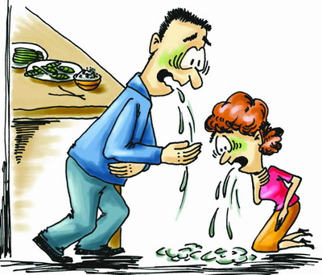

¿Qué es?
Es un estado clínico patológico que aparece por la acción de una sustancia tóxica que es introducida en nuestro organismo.
Las sustancias tóxicas que pueden producir una intoxicación son múltiples, destacando:
productos de limpieza, como detergentes, abrillantadores
medicamentos, como la aspirina, la digoxina
el alcohol
el monóxido de carbono, como en incendios o con calentadores en mal estado.
diferentes drogas de abuso,
algunas setas tóxicas.
Las vías por las que una sustancia tóxica es introducida en el cuerpo para producir una intoxicación, son varias: la más frecuente es la vía oral, aunque también debemos recordar la inhalación, y la vía venosa.
La causa de una intoxicación puede ser accidental, o puede ser el resultado de una tentativa de una autolesión.
¿Cuáles son los síntomas?
Los síntomas que presenta la persona que tiene una intoxicación pueden ser muy variados, en función sobre todo de cuál sea la sustancia tóxica causante de la intoxicación, destacando:
A nivel neurológico, la persona puede presentar síntomas leves como vértigos o inestabilidad, o más graves como convulsiones, coma, o parálisis muscular.
A nivel respiratorio, podemos encontrar la tos, un aumento de la frecuencia respiratoria, o la falta de aire.
A nivel cardiaco, debemos buscar una alteración de la frecuencia cardiaca, o del ritmo cardiaco, o bien una alteración de la tensión arterial.
A nivel del tracto digestivo, una persona con una intoxicación puede padecer desde una simple gastroenteritis, hasta una parada intestinal o insuficiencia hepática grave.
A nivel de los órganos de los sentidos, podemos encontrar una visión borrosa, o unos acúfenos.
A nivel de la piel, podemos apreciar desde una urticaria, un eritema, una descamación de la piel.
Es importante conocer cuál es la sustancia que ha producido la intoxicación, y dado que la vía de entrada más frecuente es la oral, debemos recordar qué es lo que hemos comido o tomado recientemente, y el tiempo transcurrido desde su ingesta.
¿Qué debemos hacer?
Ante la sospecha de una intoxicación debemos acudir a un centro sanitario donde un médico realizará un interrogatorio para poder determinar cual es la sustancia tóxico, una exploración física de la persona para determinar su estado clínico, se le harán las pruebas complementarias oportunas como analíticas de sangre y orina para la determinación de tóxicos.
En caso de una intoxicación por ingesta de una sustancia tóxica, lo que debemos hacer es, en espera de los servicios médicos de urgencias:
Observar la respiración y la circulación; si la persona no respira y no tiene pulso, debe iniciarse la respiración boca a boca y en el caso de conocer las maniobras de reanimación cardiopulmonar, deben iniciarse.
Comprobar que la persona haya ingerido algún tóxico; observar el olor de posibles sustancias químicas o buscar algún recipiente o alimento cercano.
Llamar al centro de toxicología de España
Si vomita, hay que dejar libres las vías respiratorias, para ello hay que limpiar la boca y la garganta de la persona intoxicada con un trozo de tela. Se puede guardar el vómito por si es preciso analizarlo para poder conocer cuál es la sustancia tóxica que ha tomado.
En caso de una intoxicación por inhalación de una sustancia tóxica, lo que debemos hacer es, en espera de los servicios médicos de urgencias:
Alejar a la víctima del gas, y abrir las ventanas y puertas para que salgan el humo
Respirar aire fresco profundamente varias veces y luego contener la respiración al entrar al lugar. Se aconseja colocarse un pedazo de tela mojado sobre la nariz y la boca.
NO encender fósforos o utilizar encendedores
Observar la respiración y la circulación; si la persona no respira y no tiene pulso, debe iniciarse la respiración boca a boca y en el caso de conocer las maniobras de reanimación cardiopulmonar, deben iniciarse.
¿Qué no debemos hacer?
Ante una persona en la que sospechamos está intoxicada:
No debemos dar le bebidas vía oral si está inconsciente
No debemos provocar el vómito, salvo que lo indique la unidad detoxicología.